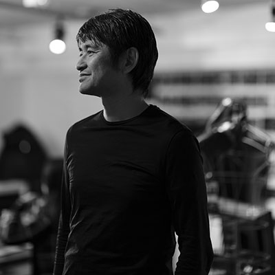

人間の感情と感覚を揺さぶるXR体験とは何か、を考える（対談）
講演情報
| 講演資料 | 無し |
|---|---|
| スクリーンショット撮影可否 | 可 |
| SNS投稿可否 | 可 |
講演概要
エンハンスでは、体験の共感覚的な拡張を目指して、研究開発を続けています。その領域は、さらに広がりつつあります。わたしたちが、何を大切にして、どのようにシナスタジア（共感覚）体験を実現しようとしているか、また、どんな領域に拡張しようとしているかを、代表の水口哲也と、VPである山田秀人と、クリエイティブ・ディレクターの石原孝士で議論します。そして、わたしたちがこれまで生み出してきたプロダクト、アート、エンターテイメントを例に、わたしたちが考えるこれからのXR体験の方向性やビジョンを共有しつつ、触覚や身体性のデザイン、演出、イメージ作り、行動設計、グローバル設計、空間設計、仕組み作りなど、体験設計の実際とコツを可能な限りシェアします。
講演者詳細
-

エンハンス代表、シナスタジアラボ主宰。シナスタジア（共感覚）体験の拡張を目指し創作を続けている。代表作に、映像と音と触覚を融合させたビデオゲーム作品「Rez」(2001)、「Lumines」(2004)、「Child of Eden」(2010)、RezのVR拡張版である「Rez Infinite」(2016)、テトリスのVR拡張版「Tetris Effect」(2018)、音楽を光と振動で全身に拡張する「シナスタジア・スーツ」(2016)、共感覚体験装置「シナスタジア X1 – 2.44」(2019)など多数。 2002年文化庁メディア芸術祭特別賞(Rez)、2002年Ars Electronicaインタラクティブアート部門Honorary Mention(Rez)、2006年米国プロデューサー協会(PGA)「Digital 50」に選出。2017年米国The Game Award最優秀VR賞受賞(Rez Infinite)。文化庁メディア芸術祭エンターテインメント部門審査主査、日本賞審査員、芸術選奨選考審査員などを歴任。XRコンソーシアム理事、Media Ambition Tokyo(MAT)理事。エッジ・オブ共同創業者兼CCO。
エンハンスWeb：enhance-experience.com -
「見えないものを、体験に」をテーマに、さまざまなメディア領域でオーディオビジュアル作品やデジタルコンテンツを手がける。
コンピューターグラフィックスの黎明期から、日立、ナムコといったCGの先端を走る企業でビジュアルコンテンツや映像制作を手がけ、その後、インターネットやXRデバイスとの出会いをきっかけに活動の場を拡げ、ユニークな表現を模索し続けている。
過去作品に、オーディオビジュアルパフォーマンスの民主化を目指した「fuZe project.」 (Unity Technology Japan)、サウンドスケープによる新しい地図体験を目指した「3D地図」(NTT docomo)、飯野賢治氏との共作「きみとぼくと立体。」 (Nintendo)など。
2012年9月にLiveALife inc.を立ち上げ、2017年9月よりEnhance Experience inc. へ参画。